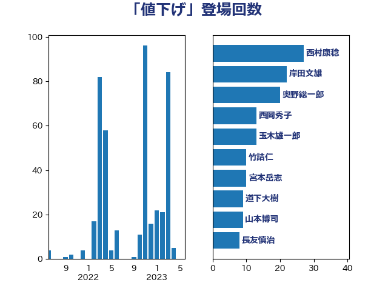

単語「値下げ」

| 西村康稔 | 自由民主党 | 27 回 |
| 岸田文雄 | 自由民主党 | 22 回 |
| 奥野総一郎 | 立憲民主党 | 20 回 |
| 西岡秀子 | 国民民主党 | 13 回 |
| 玉木雄一郎 | 国民民主党 | 13 回 |
| 竹詰仁 | 国民民主党 | 10 回 |
| 宮本岳志 | 日本共産党 | 10 回 |
| 道下大樹 | 立憲民主党 | 9 回 |
| 山本博司 | 公明党 | 9 回 |
| 長友慎治 | 国民民主党 | 8 回 |
| 芳賀道也 | 国民民主党 | 6 回 |
| 神谷裕 | 立憲民主党 | 6 回 |
| 礒崎哲史 | 国民民主党 | 6 回 |
| 斎藤アレックス | 国民民主党 | 6 回 |
| 赤木正幸 | 日本維新の会 | 5 回 |
| 若松謙維 | 公明党 | 5 回 |
| 清水貴之 | 日本維新の会 | 5 回 |
| 柳ヶ瀬裕文 | 日本維新の会 | 5 回 |
| 小沢雅仁 | 立憲民主党 | 5 回 |
| 小森卓郎 | 自由民主党 | 5 回 |
| 伊藤岳 | 日本共産党 | 5 回 |
| 足立康史 | 日本維新の会 | 3 回 |
| 赤羽一嘉 | 公明党 | 3 回 |
| 藤井比早之 | 自由民主党 | 3 回 |
| 萩生田光一 | 自由民主党 | 3 回 |
| 舟山康江 | 国民民主党 | 3 回 |
| 石川博崇 | 公明党 | 3 回 |
| 片山大介 | 日本維新の会 | 3 回 |
| 泉健太 | 立憲民主党 | 3 回 |
| 江島潔 | 自由民主党 | 3 回 |
| 松本剛明 | 自由民主党 | 3 回 |
| 寺田稔 | 自由民主党 | 3 回 |
| 吉良よし子 | 日本共産党 | 3 回 |
| 住吉寛紀 | 日本維新の会 | 3 回 |
| 伊藤孝恵 | 国民民主党 | 3 回 |
| 金子恭之 | 自由民主党 | 2 回 |
| 輿水恵一 | 公明党 | 2 回 |
| 細田健一 | 自由民主党 | 2 回 |
| 稲田朋美 | 自由民主党 | 2 回 |
| 石井章 | 日本維新の会 | 2 回 |
| 浜口誠 | 国民民主党 | 2 回 |
| 浅野哲 | 国民民主党 | 2 回 |
| 沢田良 | 日本維新の会 | 2 回 |
| 東徹 | 日本維新の会 | 2 回 |
| 小野泰輔 | 日本維新の会 | 2 回 |
| 小池晃 | 日本共産党 | 2 回 |
| 中野洋昌 | 公明党 | 2 回 |
| 高橋千鶴子 | 日本共産党 | 1 回 |
| 音喜多駿 | 日本維新の会 | 1 回 |
| 青柳仁士 | 日本維新の会 | 1 回 |
| 鈴木俊一 | 自由民主党 | 1 回 |
| 藤田文武 | 日本維新の会 | 1 回 |
| 藤巻健太 | 日本維新の会 | 1 回 |
| 藤原崇 | 自由民主党 | 1 回 |
| 緑川貴士 | 立憲民主党 | 1 回 |
| 米山隆一 | 立憲民主党 | 1 回 |
| 空本誠喜 | 日本維新の会 | 1 回 |
| 稲富修二 | 立憲民主党 | 1 回 |
| 田村まみ | 国民民主党 | 1 回 |
| 浮島智子 | 公明党 | 1 回 |
| 浜田聡 | NHK党 | 1 回 |
| 泉田裕彦 | 自由民主党 | 1 回 |
| 河野義博 | 公明党 | 1 回 |
| 江田憲司 | 立憲民主党 | 1 回 |
| 櫻井周 | 立憲民主党 | 1 回 |
| 横山信一 | 公明党 | 1 回 |
| 柴山昌彦 | 自由民主党 | 1 回 |
| 松野博一 | 自由民主党 | 1 回 |
| 末松義規 | 立憲民主党 | 1 回 |
| 斎藤洋明 | 自由民主党 | 1 回 |
| 徳永久志 | 立憲民主党 | 1 回 |
| 平山佐知子 | 無所属 | 1 回 |
| 小川淳也 | 立憲民主党 | 1 回 |
| 守島正 | 日本維新の会 | 1 回 |
| 奥下剛光 | 日本維新の会 | 1 回 |
| 太田房江 | 自由民主党 | 1 回 |
| 大串博志 | 立憲民主党 | 1 回 |
| 塩田博昭 | 公明党 | 1 回 |
| 堀井巌 | 自由民主党 | 1 回 |
| 吉川元 | 立憲民主党 | 1 回 |
| 前原誠司 | 国民民主党 | 1 回 |
| 倉林明子 | 日本共産党 | 1 回 |
| 丸川珠代 | 自由民主党 | 1 回 |
| 中川康洋 | 公明党 | 1 回 |
| 中川宏昌 | 公明党 | 1 回 |
| 世耕弘成 | 自由民主党 | 1 回 |
| 上田清司 | 国民民主党 | 1 回 |
| ながえ孝子 | 無所属 | 1 回 |